csdn链接：https://blog.csdn.net/weixin_44791964/article/details/102824592
经典神经网络的改进点
| 名称 | 改进点 |
|---|---|
| VGG16 | 1、使用非常多的3*3卷积串联，利用小卷积代替大卷积，该操作使得其拥有更少的参数量，同时会比单独一个卷积层拥有更多的非线性变换。2、探索了卷积神经网络的深度与其性能之间的关系，成功构建16层网络（还有VGG19的19层网络）。 |
| ResNet50 | 1、使用残差网络，其可以解决由于网络深度加深而产生的学习效率变低与准确率无法有效提升的问题。2、采用bottleneck design结构，在3x3网络结构前利用1x1卷积降维，在3x3网络结构后，利用1x1卷积升维，相比直接使用3x3网络卷积效果更好，参数更少。 |
| InceptionV3 | 1、Inception系列通用的改进点是使用不同大小的卷积核，使得存在不同大小的感受野，最后实现拼接达到不同尺度特征的融合。2、利用1x7的卷积和7x1的卷积代替7x7的卷积，这样可以只使用约（1x7 + 7x1) / (7x7) = 28.6%的计算开销；利用1x3的卷积和3x1的卷积代替3x3的卷积，这样可以只使用约（1x3 + 3x1) / (3x3) = 67%的计算开销。 |
| Xception | 1、开始采用残差网络，其可以解决由于网络深度加深而产生的学习效率变低与准确率无法有效提升的问题。2、采用SeparableConv2D层，先进行1x1操作然后再进行滑动3x3操作，中间为了保证数据不被破坏，没有添加relu层。 |
| MobileNet | 1、是一种轻量级的深层神经网络，为一定设备设计。 2、采用depthwise separable convolution结构，3x3卷积核厚度只有一层，然后在输入张量上一层一层地滑动，所以一个卷积核就对应了一个输出通道，当卷积完成后，在利用1x1的卷积调整厚度，实现参数减少。 |
1、VGG16
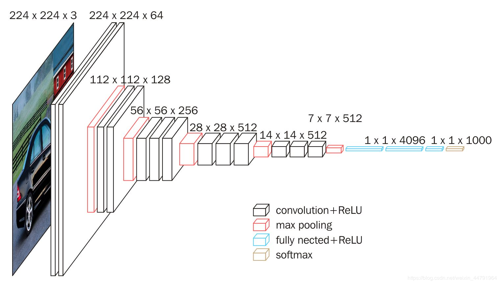
1、一张原始图片被resize到(224,224,3)。
2、conv1两次[3,3]卷积网络，输出的特征层为64，输出为(224,224,64)，再2X2最大池化，输出net为(112,112,64)。
3、conv2两次[3,3]卷积网络，输出的特征层为128，输出net为(112,112,128)，再2X2最大池化，输出net为(56,56,128)。
4、conv3三次[3,3]卷积网络，输出的特征层为256，输出net为(56,56,256)，再2X2最大池化，输出net为(28,28,256)。
5、conv3三次[3,3]卷积网络，输出的特征层为256，输出net为(28,28,512)，再2X2最大池化，输出net为(14,14,512)。
6、conv3三次[3,3]卷积网络，输出的特征层为256，输出net为(14,14,512)，再2X2最大池化，输出net为(7,7,512)。
7、利用卷积的方式模拟全连接层，效果等同，输出net为(1,1,4096)。共进行两次。
8、利用卷积的方式模拟全连接层，效果等同，输出net为(1,1,1000)。
最后输出的就是每个类的预测。
具体实现代码可以看我的博文神经网络学习小记录16——VGG16模型的复现及其详解（包含如何预测）
2、ResNet50
ResNet50最大的特点是使用了残差网络。
残差网络的特点是将靠前若干层的某一层数据输出直接跳过多层引入到后面数据层的输入部分。
意味着后面的特征层的内容会有一部分由其前面的某一层线性贡献。
其结构如下：
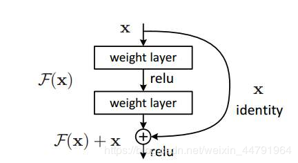
ResNet50有两个基本的块，分别名为Conv Block和Identity Block，其中Conv Block输入和输出的维度是不一样的，所以不能连续串联，它的作用是改变网络的维度；Identity Block输入维度和输出维度相同，可以串联，用于加深网络的。
Conv Block的结构如下：
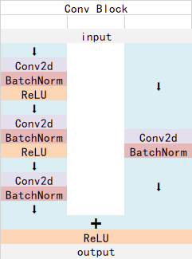
Identity Block的结构如下：

这两个都是残差网络结构。
总的网络结构如下：
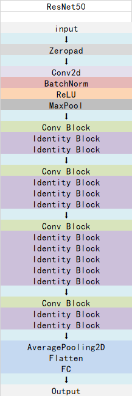
conv中存在瓶颈结构，(1,1)的卷积降维，（3，3）卷积，（1，1）升维
具体实现代码可以看我的博文神经网络学习小记录20——ResNet50模型的复现详解
3、InceptionV3
Inception系列的网络的特点是采用不同大小的卷积核，使得存在不同大小的感受野，最后实现拼接达到不同尺度特征的融合。
对于InceptionV3而言，其网络中存在着如下的结构。
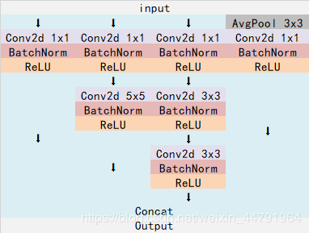
这个结构使用不同大小的卷积核对输入进行卷积（这个结构主要在代码中的block1使用）。
还存在着这样的结构，利用1x7的卷积和7x1的卷积代替7x7的卷积，这样可以只使用约（1x7 + 7x1) / (7x7) = 28.6%的计算开销；利用1x3的卷积和3x1的卷积代替3x3的卷积，这样可以只使用约（1x3 + 3x1) / (3x3) = 67%的计算开销。
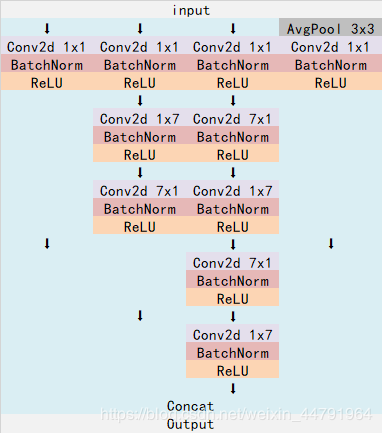
下图利用1x7的卷积和7x1的卷积代替7x7的卷积（这个结构主要在代码中的block2使用）。
下图利用1x3的卷积和3x1的卷积代替3x3的卷积（这个结构主要在代码中的block3使用）。
具体实现代码可以看我的博文神经网络学习小记录21——InceptionV3模型的复现详解
4、Xception
其可以被叫做极致的Inception。
其特点是采用了残差网络和depthwise separable convolution。
depthwise separable convolution就是对于一个卷积点而言：
假设有一个3×3大小的卷积层，其输入通道为16、输出通道为32。具体为，32个3×3大小的卷积核会遍历16个通道中的每个数据，最后可得到所需的32个输出通道，所需参数为16×32×3×3=4608个。
应用深度可分离卷积，用16个3×3大小的卷积核分别遍历16通道的数据，得到了16个特征图谱。在融合操作之前，接着用32个1×1大小的卷积核遍历这16个特征图谱，所需参数为16×3×3+16×32×1×1=656个。
可以看出来depthwise separable convolution可以减少模型的参数。
通俗地理解就是卷积核厚度只有一层，然后在输入张量上一层一层地滑动，所以一个卷积核就对应了一个输出通道，当卷积完成后，在利用1x1的卷积调整厚度。
不过Xception模型中的depthwise separable convolution和普通的不太一样，普通的depthwise separable convolution是先进行3x3操作再进行1x1操作（就好像mobileNet中的一样），而Xception模型中则是先进行1x1操作然后再进行3x3操作，中间为了保证数据不被破坏，没有添加relu层，而mobileNet添加了relu层。在建立模型的时候，可以使用Keras中的SeparableConv2D层建立相应的功能。
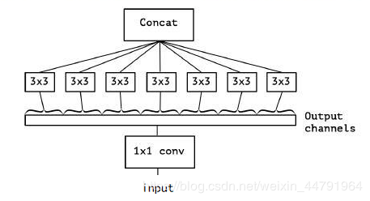
对于Xception模型而言，其一共可以分为3个flow，分别是Entry flow、Middle flow、Exit flow；分为14个block，其中Entry flow中有4个、Middle flow中有8个、Exit flow中有2个。具体结构如下：
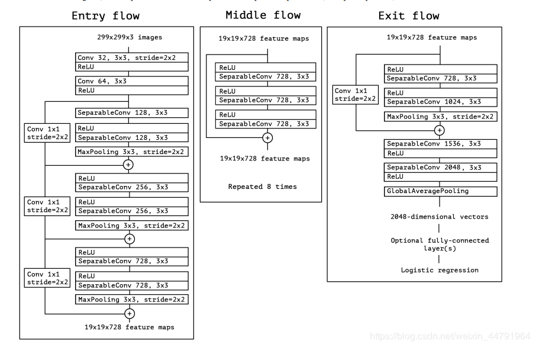
其内部主要结构就是残差卷积网络搭配SeparableConv2D层实现一个个block，在Xception模型中，常见的两个block的结构如下。
这个主要在Entry flow和Exit flow中：
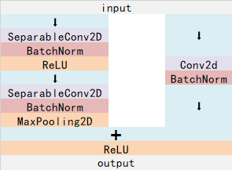
这个主要在Middle flow中：
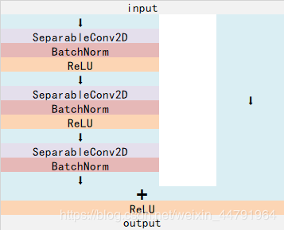
具体实现代码可以看我的博文神经网络学习小记录22——Xception模型的复现详解
5、MobileNet
MobileNet模型是Google针对手机等嵌入式设备提出的一种轻量级的深层神经网络，其使用的核心思想便是depthwise separable convolution。
对于一个卷积点而言：
假设有一个3×3大小的卷积层，其输入通道为16、输出通道为32。具体为，32个3×3大小的卷积核会遍历16个通道中的每个数据，最后可得到所需的32个输出通道，所需参数为16×32×3×3=4608个。
应用深度可分离卷积，用16个3×3大小的卷积核分别遍历16通道的数据，得到了16个特征图谱。在融合操作之前，接着用32个1×1大小的卷积核遍历这16个特征图谱，所需参数为16×3×3+16×32×1×1=656个。
可以看出来depthwise separable convolution可以减少模型的参数。
如下这张图就是depthwise separable convolution的结构
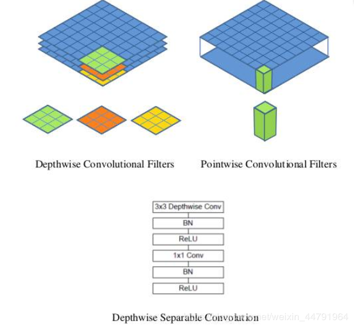
在建立模型的时候，可以使用Keras中的DepthwiseConv2D层实现深度可分离卷积，然后再利用1x1卷积调整channels数。
通俗地理解就是3x3的卷积核厚度只有一层，然后在输入张量上一层一层地滑动，每一次卷积完生成一个输出通道，当卷积完成后，在利用1x1的卷积调整厚度。
如下就是MobileNet的结构，其中Conv dw就是分层卷积，在其之后都会接一个1x1的卷积进行通道处理，
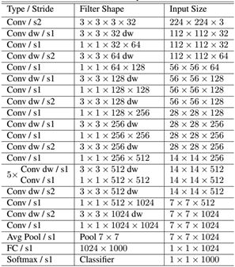
具体实现代码可以看我的博文神经网络学习小记录23——MobileNet模型的复现详解